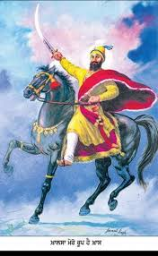

Guru Gobind Singh
Sikh Guru
Intro
the tenth Sikh Guru, a spiritual master, warrior, poet and philosopher.
Among his notable contributions to Sikhism are founding the Sikh warrior community called Khalsa in 1699 and introducing the Five Ks, the five articles of faith that Khalsa Sikhs wear at all times.
Guru Gobind Singh is credited with the Dasam Granth whose hymns are a sacred part of Sikh prayers and Khalsa rituals. He is also credited as the one who finalized and enshrined the Guru Granth Sahib as Sikhism's primary scripture and eternal Guru.
